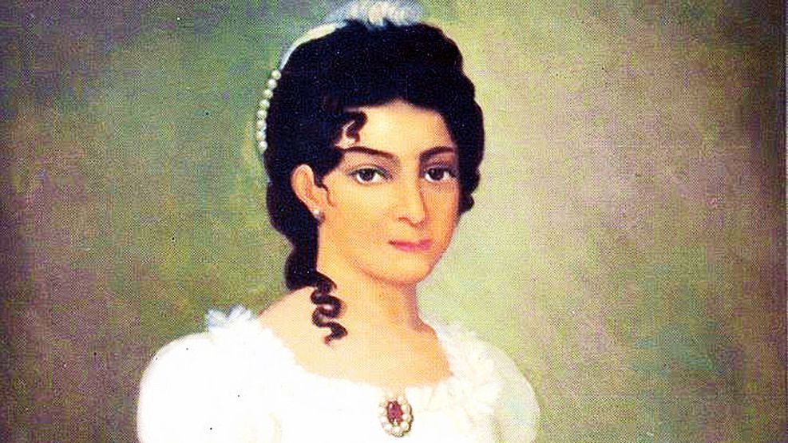
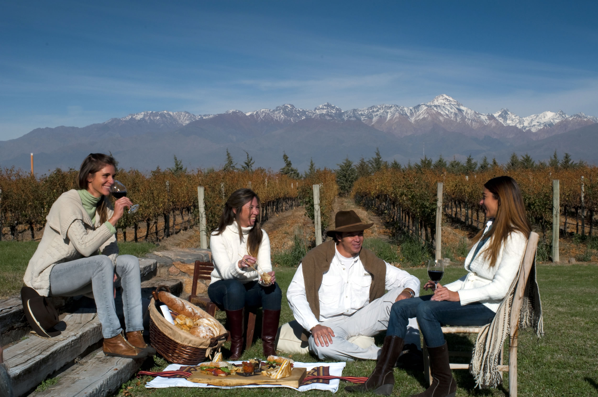
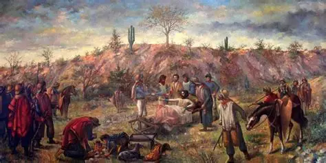

Nacimiento y familia
Nació el 20 de noviembre de 1797 en Buenos Aires. Hija de Antonio José de Escalada y Tomasa de la Quintana, una familia muy reconocida y patriota.

Matrimonio con San Martín
El 12 de septiembre de 1812 se casó con José de San Martín en la Iglesia de la Merced. Tenía solo 14 años. En 1816 nació su única hija, Mercedes Tomasa.

Vida en Mendoza
En Mendoza, mientras San Martín organizaba el Ejército de los Andes, Remedios presidió la comisión de damas patricias. Allí bordó junto a otras mujeres la bandera que cruzó los Andes.

